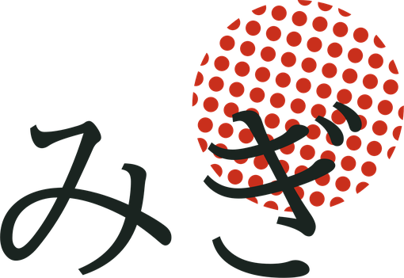
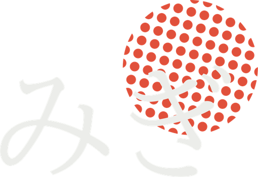
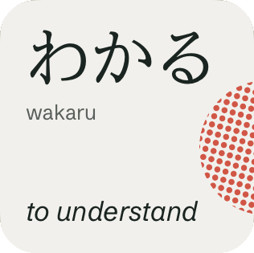
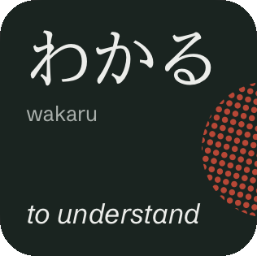
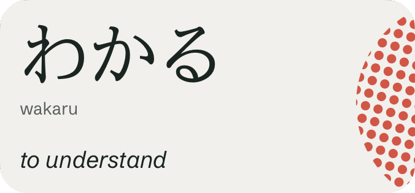
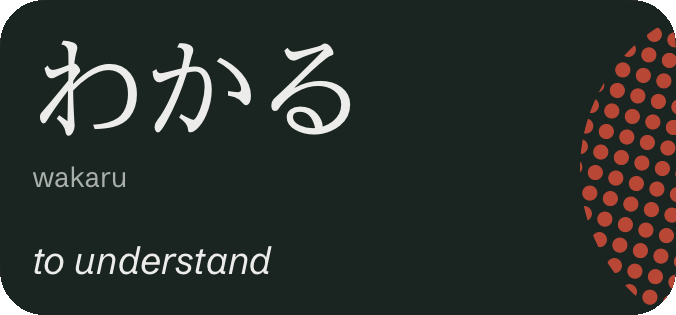
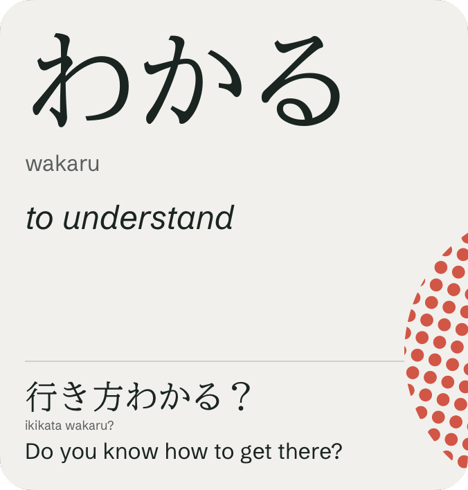
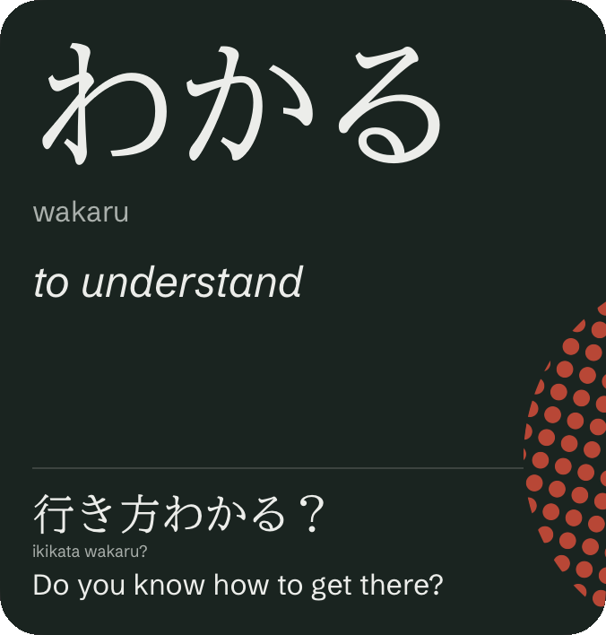
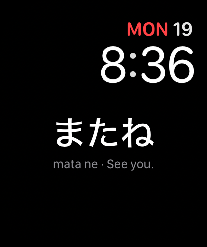

7:40 · Leaving homeLock Screen
A word under the clock. Glance, then go.
Monday 19 October
7:40
行ってきます
ittekimasu
I'm off. (leaving home)


Everyday words and phrases on your Lock Screen, widgets and Apple Watch. Glance at them a few times a day. Now and then, one tap checks what's sticking.
Get one email when Migi launches ↓A word under the clock. Glance, then go.
Small, medium or large. The bigger the widget, the more it shows: the large one adds an example sentence.






The word sits on your watch face, so checking the time means seeing some Japanese.

A word, or a quick check, delivered quietly. Off unless you turn them on.
Seeing a word helps. Picking its meaning from memory helps more: quick checks like this are retrieval practice.